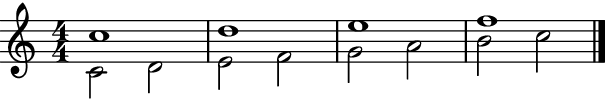
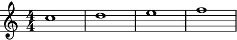
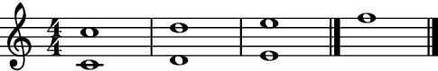

Score.add_final_bar_line
- Score.add_final_bar_line(bar_line: str | BarLine = '|.', *, to_each_voice: bool = False) None[source]
- Adds a final bar line to all components of
abjad.Score. Note that Auxjad adds this function as an extension method to
abjad.Score(see usage below).- Basic usage:
>>> staff = abjad.Staff(r"c'4 d'4 e'4 f'4") >>> score = abjad.Score([staff]) >>> abjad.show(score)

>>> score.add_final_bar_line() >>> abjad.show(score)
- Multiple staves:
Works with multiple staves:
>>> staff_1 = abjad.Staff(r"c''1 d''1 e''1 f''1") >>> staff_2 = abjad.Staff(r"c'1 d'1 e'1 f'1") >>> score = abjad.Score([staff_1, staff_2]) >>> score.add_final_bar_line() >>> abjad.show(score)
Each stave will receive their own final bar line, which can be useful when part extracting:
>>> abjad.show(staff_1)

>>> abjad.show(staff_2)
to_each_voiceWhen multiple voices are present in a staff, the final bar line is added to the last voice only:
>>> voice_1 = abjad.Voice(r"c''1 d''1 e''1 f''1") >>> voice_2 = abjad.Voice(r"c'2 d'2 e'2 f'2 g'2 a'2 b'2 c''2") >>> staff = abjad.Staff([voice_1, voice_2], simultaneous=True) >>> abjad.attach(abjad.LilyPondLiteral(r'\voiceOne'), voice_1) >>> abjad.attach(abjad.LilyPondLiteral(r'\voiceTwo'), voice_2) >>> score = auxjad.Score([staff]) >>> score.add_final_bar_line() >>> abjad.show(score)
 >>> abjad.show(voice_1)
 >>> abjad.show(voice_2)

Setting
to_each_voicetoTruewill add a bar line to each voice in a staff:>>> voice_1 = abjad.Voice(r"c''1 d''1 e''1 f''1") >>> voice_2 = abjad.Voice(r"c'2 d'2 e'2 f'2 g'2 a'2 b'2 c''2") >>> staff = abjad.Staff([voice_1, voice_2], simultaneous=True) >>> abjad.attach(abjad.LilyPondLiteral(r'\voiceOne'), voice_1) >>> abjad.attach(abjad.LilyPondLiteral(r'\voiceTwo'), voice_2) >>> score = auxjad.Score([staff]) >>> score.add_final_bar_line(to_each_voice=True) >>> abjad.show(voice_1)
>>> abjad.show(voice_2)
Warning
If voices do not end together then manually adding bar lines will be required:
>>> voice_1 = abjad.Voice(r"c''1 d''1 e''1 f''1") >>> voice_2 = abjad.Voice(r"c'1 d'1 e'1") >>> staff = abjad.Staff([voice_1, voice_2], simultaneous=True) >>> abjad.attach(abjad.LilyPondLiteral(r'\voiceOne'), voice_1) >>> abjad.attach(abjad.LilyPondLiteral(r'\voiceTwo'), voice_2) >>> score = auxjad.Score([staff]) >>> score.add_final_bar_line(to_each_voice=True) >>> abjad.show(score)
 - argument:
The default bar line is of type
'|.'. To change this behaviour, call this method with an argument of typestrorabjad.BarLinewith the desired bar line type:>>> staff_1 = abjad.Staff(r"c''1 d''1 e''1 f''1") >>> staff_2 = abjad.Staff(r"c'1 d'1 e'1 f'1") >>> score = auxjad.Score([staff_1, staff_2]) >>> score.add_final_bar_line(abjad.BarLine(":|.")) >>> abjad.show(score)
- Adds a final bar line to all components of